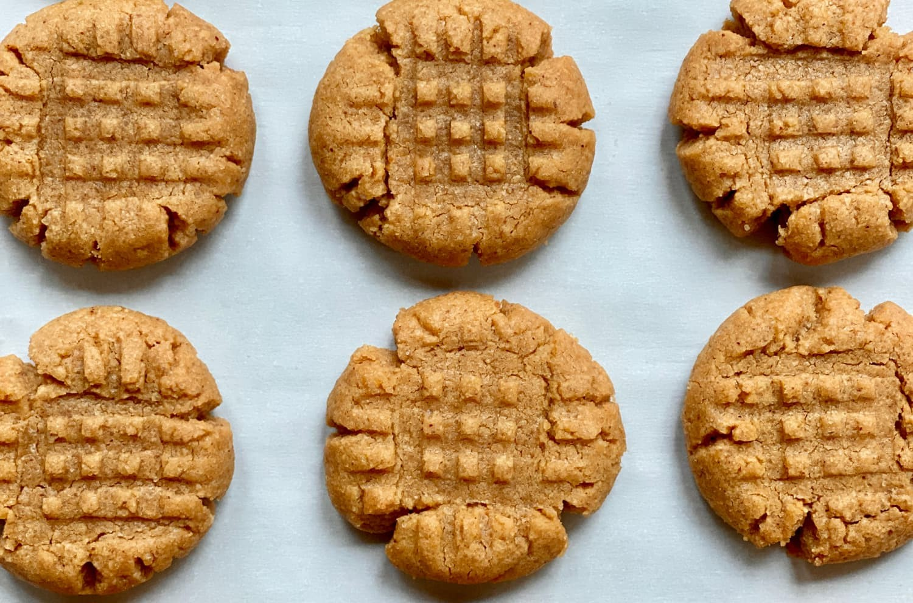

приготовление:
-
В средней миске смешать 310 г просеянной пшеничной муки, 1 ч. л. разрыхлителя, 1 ч. л. соды и ½ ч. л. соли. Отставить в сторону.
-
С помощью миксера взбить 220 г мягкого сливочного масла и 200 г коричневого сахара на средней скорости до гладкой массы в течение 1–2 минут. Добавить 2 яйца и взбивать на высокой скорости ещё 1 минуту. Добавить 500 г арахисовой пасты и 1,5 ч. л. ванильного экстракта, снова взбить до однородности.
-
Добавить сухие ингредиенты к влажным и перемешать на низкой скорости до однородности. Тесто получится плотным и мягким.
-
Накрыть тесто и убрать в холодильник минимум на 1 час. Тесто можно хранить в холодильнике до 2–3 дней. После длительного охлаждения оставить его при комнатной температуре минимум на 30 минут перед формированием печенья, иначе оно будет слишком твёрдым.
-
Разогреть духовку до 185 градусов. Сформировать из теста 24–40 шариков в зависимости от желаемого размера и обвалять их в сахаре. Вилкой сделать на каждом шарике решётчатый отпечаток. Выпекать на застеленном пергаментом противне 10–12 минут для небольшого печенья или 15–17 минут для крупного, пока края слегка не подрумянятся. Середина останется очень мягкой, но застынет при остывании.
-
Дать печенью остыть на противне в течение 5 минут, затем переложить на решётку и полностью остудить. Хранить в закрытом контейнере при комнатной температуре до 1 недели.